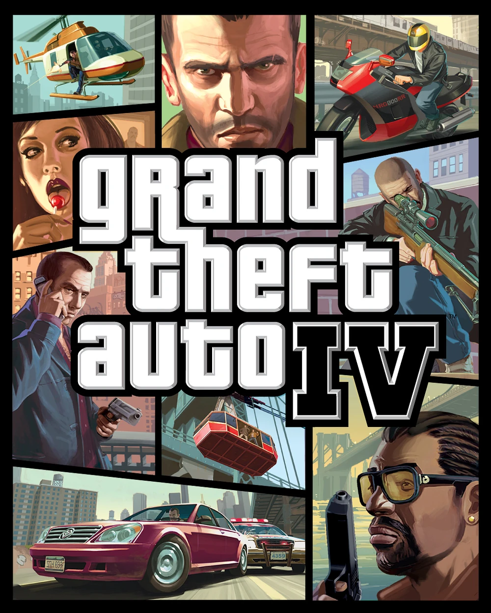

Grand Theft Auto IV es un videojuego de acción y sandbox de mundo abierto desarrollado por Rockstar North y distribuido por Rockstar Games lanzado originalmente el 29 de abril de 2008 para PlayStation 3 y Xbox 360.
El juego transcurre en una moderna Liberty City, parodia de la ciudad de Nueva York, y en el estado de Alderney (Nueva Jersey).
El jugador tomará el control de Niko Bellic, un militar ex-combatiente serbio que llega a la ciudad en busca de venganza por una traición que recibió durante la guerra.
Además, el videojuego introduce la mecánica del teléfono: Desde él, el jugador puede recibir llamadas de contactos para desbloquear misiones, o hacerlas para poder realizar actividades secundarias con amigos o parejas.
|  | |
|---|---|
| Desarrollador | Rockstar North |
| Distribuidor | Rockstar Games |
| Productor | Leslie Benzies |
| Guionistas |
|
| Plataformas |
|
| Fecha de lanzamiento |
PlayStation 3 Xbox 360 29 de abril de 2008 Microsoft Windows 2 de diciembre de 2008 (NA) 3 de diciembre de 2008 (EU) |
| Motor gráfico |
|
| Ventas | 25 millones de copias (noviembre de 2012) |